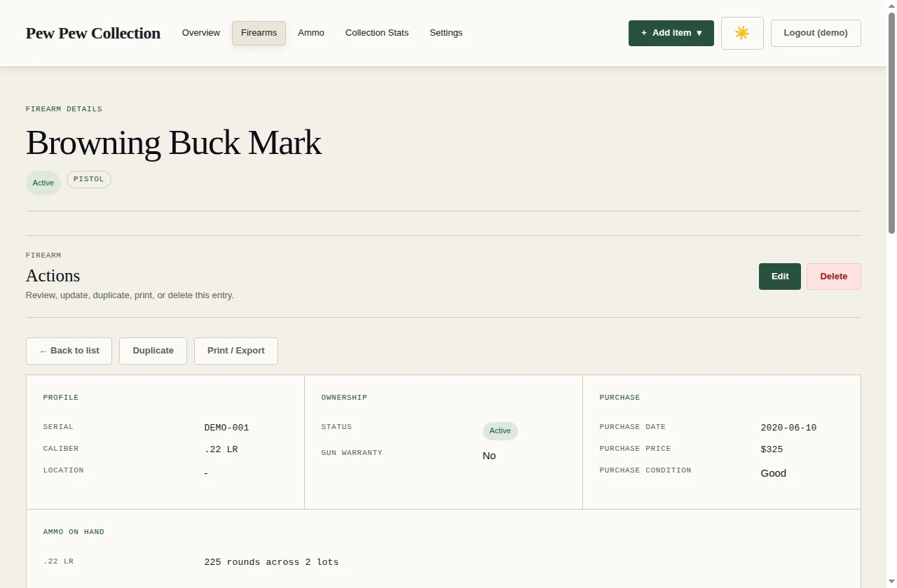
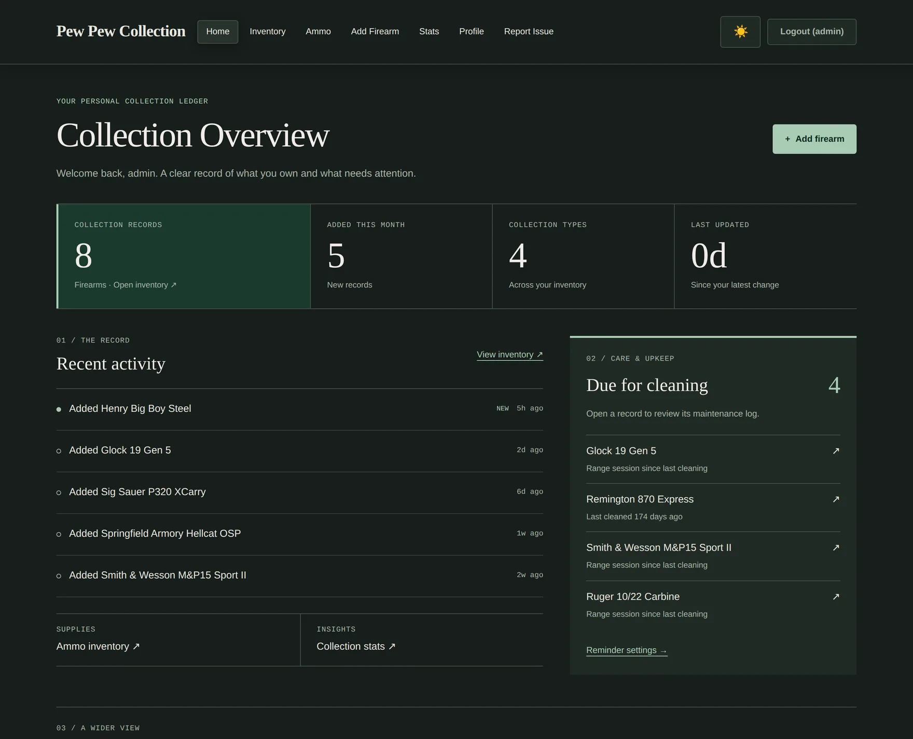
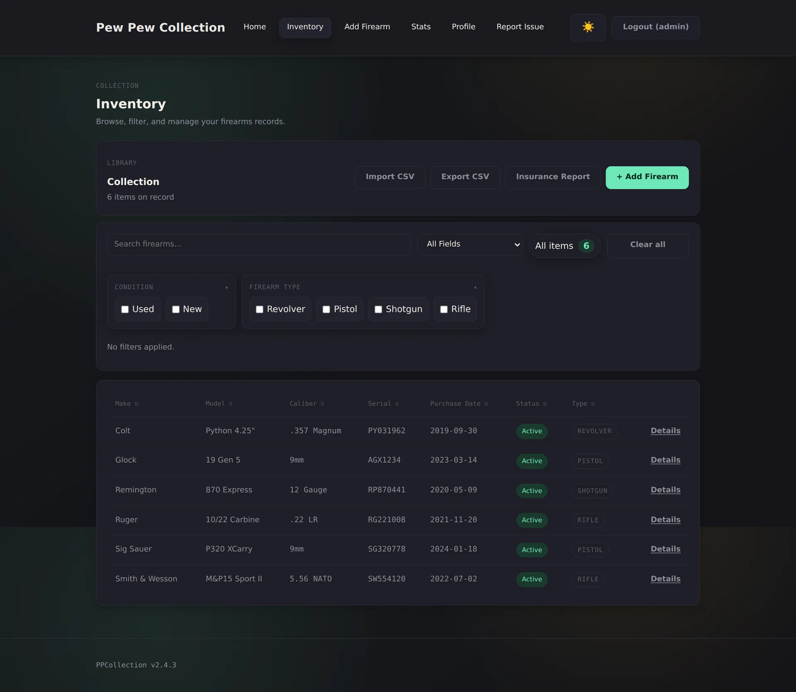
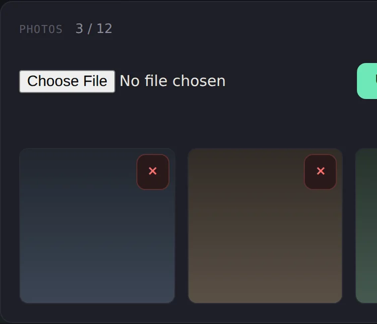
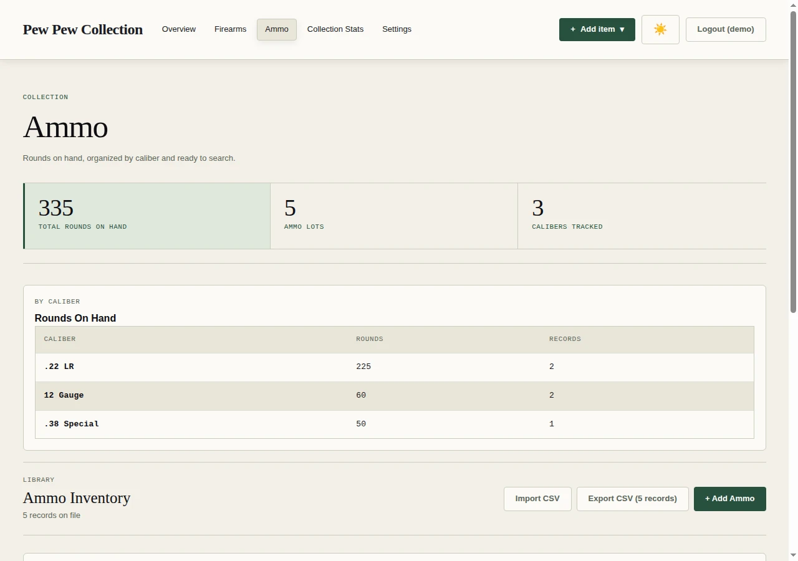
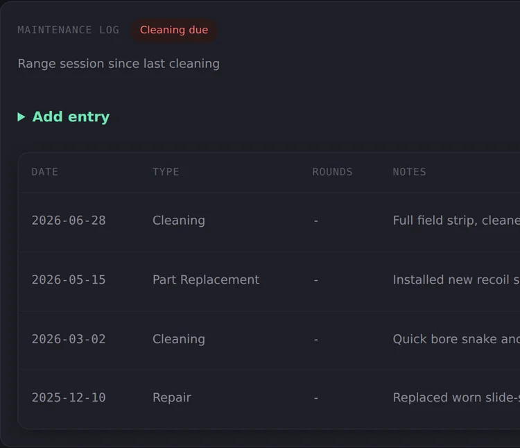
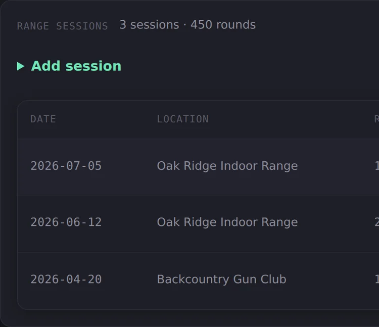
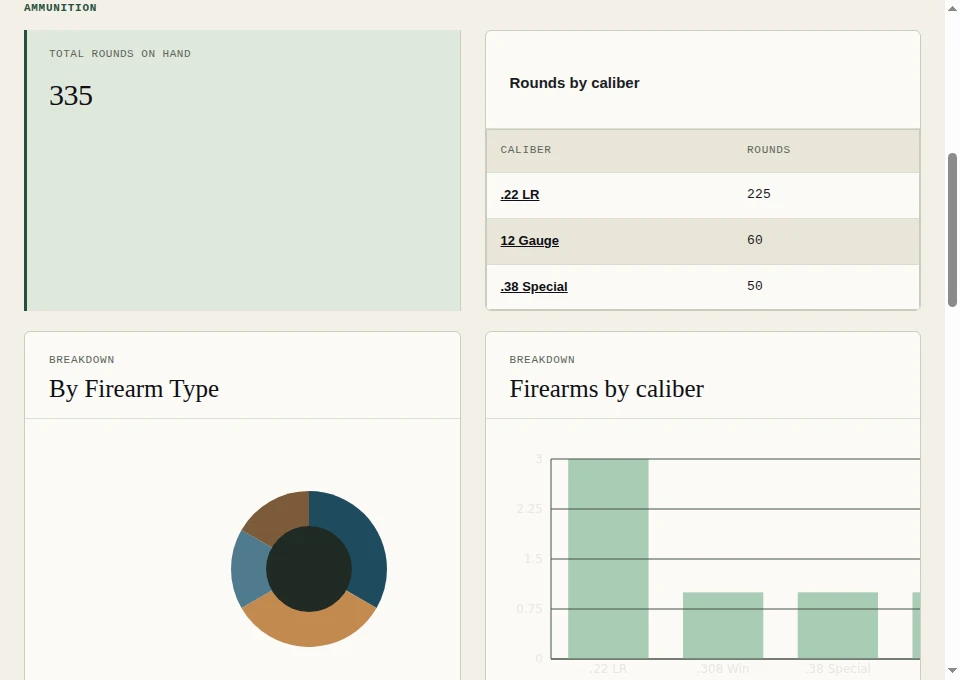
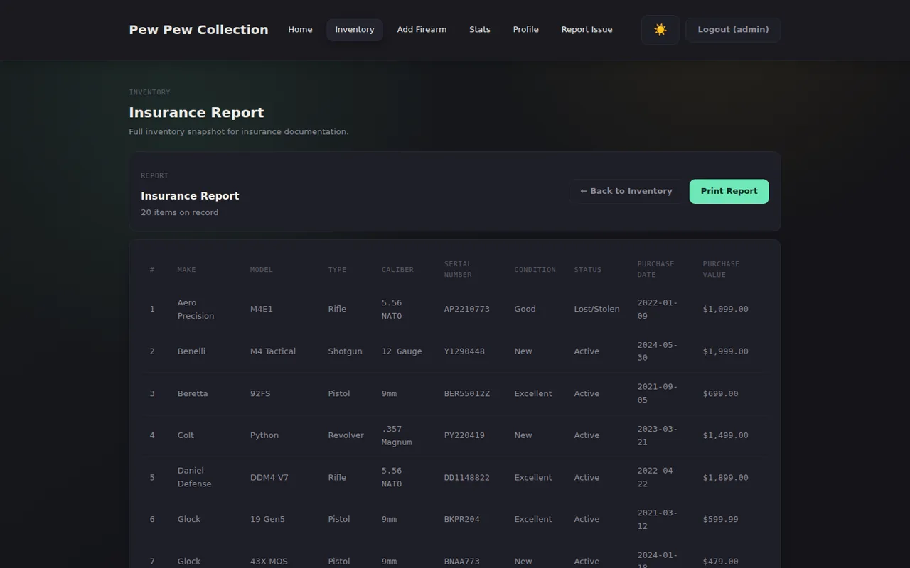
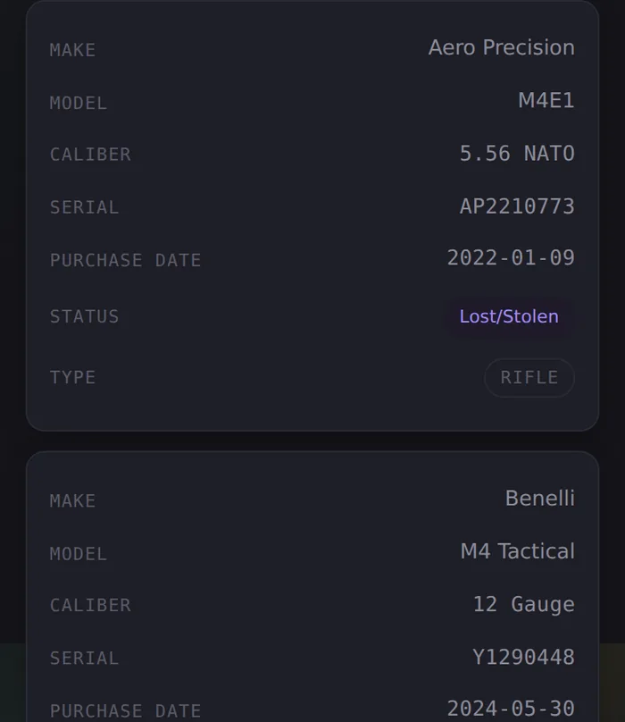

Records every detail of a firearm
Make, model, serial, caliber, condition, purchase price, warranty, storage location and notes. A firearm you sold or lost keeps who received it and when.

Keep firearm records, ammunition counts, and insurance documents together on hardware you control. Start with Docker and sign in with your local administrator account.

Firearms and Ammo each have a searchable inventory. Save a named view to return to its search, filters, and sort order. Export CSV shows how many matching records you’ll download across all pages.

Make, model, serial, caliber, condition, purchase price, warranty, storage location and notes. A firearm you sold or lost keeps who received it and when.

Photos are saved in your data volume, beside the database.

Track boxes and loose rounds by lot. Preview a CSV before importing it. In Import history, review which rows an undo would remove and which edited records it would keep.

A reminder flags any firearm not cleaned in 90 days. You set the number.

Log the date, the location and the rounds fired. Totals add up per firearm.

Collection Stats totals the rounds on hand. Select a caliber to see its ammo lots. Expand the data table beneath a firearm chart to read its exact values.

Choose the fields and supporting documents your insurer needs, then review the preview before printing or downloading.
Ask your insurer which fields it requires before you rely on the report.

The app needs the network once, to pull its image. It has no telemetry, and the release check stays off until you turn it on.
The SQLite database holds inventory records, sessions and attached PDFs. Photos and the generated session key live beside it under /data. Back up that directory, then test a restore.
You keep Docker and the app current, put HTTPS in front of remote access and encrypt your backups.
A cloud app syncs across devices with nothing to set up. Pew Pew Collection makes the opposite trade: you keep the data, and you run the server.
Read the self-hosted vs cloud comparison

| Feature | Pew Pew Collection | Spreadsheet | Cloud apps |
|---|---|---|---|
| Where the data lives | Your hardware | Your hardware or a drive service | The vendor's servers |
| Vendor account | None | Sometimes | Usually |
| Insurance report | Built in, prints to PDF | By hand | Sometimes |
| Unique serial numbers enforced | Yes | No | Varies |
| CSV import and export | Yes | Native | Varies, sometimes paid |
| Sold, lost and stolen records | Yes | By hand | Varies |
| Phone layout | Yes, in the browser | Hard to read | Usually an app |
| Works offline | Yes | Yes | Varies |
| Subscription | $0 | $0 | Monthly or yearly |
| Source available | Yes, BUSL-1.1 | Not applicable | Varies |
No. Pew Pew Collection has no reporting and no telemetry. The one built-in outbound request is an optional GitHub release check, and it is off by default.
It removes the app vendor as a custodian of your inventory. It does not make records immune from lawful access, device seizure or disclosure duties. Those depend on where you live; ask a qualified attorney.
No, if you keep a backup. Copy the whole /data directory while the container is stopped, keep a second encrypted copy somewhere else, and test a restore before you need one.
A spreadsheet works, and many collectors start there. The app adds unique serial numbers, search and filters, the insurance report with totals, and disposition records for firearms sold, lost or stolen.
Yes. After the first Docker pull the app runs offline. Setting UPDATE_CHECK=true turns on a check for new releases on GitHub; it is off by default.
Personal, noncommercial self-hosted use costs nothing under the Business Source License 1.1. Other production use may need a commercial license. The code converts to Apache 2.0 on the license's change date.
Use the built-in CSV import. Match your columns to the field names in the import dialog, then import the file.
Photos are stored in /data/photos on your own disk, up to 12 per firearm. Backing up the data directory captures the database and the photos together.
The image comes from GitHub Container Registry. You need no Docker Hub account.
docker logs ppcollection prints a one-time code on a fresh install.
Open http://localhost:3000, enter the code and choose a username and password.
When you update, recreate the container with the same /data mount. If first-run setup shows again after an update, stop and restore the original mount before you add records.
docker run -d \ --name ppcollection \ -p 3000:3000 \ -v /srv/ppcollection/data:/data \ --restart unless-stopped \ ghcr.io/gogorichielab/ppcollection:latest
services:
ppcollection:
image: ghcr.io/gogorichielab/ppcollection:latest
ports:
- "3000:3000"
volumes:
- ./data:/data
restart: unless-stopped